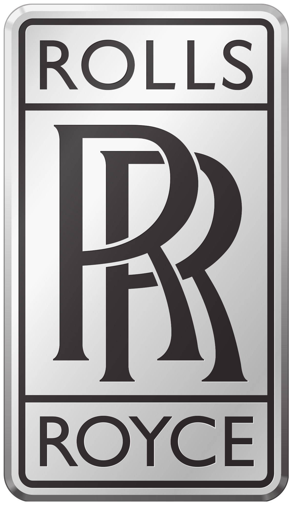

Cullinan

Rolls-Royce has never been one for hiding its light under a bushel. “Our answer to history, to the visionaries,
adventurers, explorers and those who believe in the supremacy of liberty is the Rolls-Royce Cullinan,” CEO
Torsten Müller Ötvös declaims. “It dramatically evolves the parameters of super-luxury travel. It is effortless,
everywhere.”

It’s also the company’s belated and controversial response to the boom in SUVs.
Its structure reworks the so-called ‘Architecture of Luxury’ that lies beneath the fabulous Phantom. We’re
talking a modular aluminium spaceframe, with castings in each corner and extrusions in between, reconfigured
here into a form that sits higher and shorter than in its limousine brother, with a split tail-gate (Rolls
airily calls it The Clasp) added for the necessary versatility.
Without wishing to sound euphemistic, it’s fair to say the Cullinan’s design has excited a variety of opinion.
Maybe a shallower glass area would have helped the proportions, but the Cullinan is purposely meant to be a
mobile viewing platform, and eschews the Phantom’s chunky privacy C-pillar in the process.
It’s 5.3m long, 2.1m wide, and 1.8m tall, and weighs in at 2660kg unladen. Like the Phantom, its surfaces are
fantastically resolved, and it doesn’t want for drama. The bonnet sits higher than the front wings to emphasise
the car’s tougher job description, and the traditional Parthenon grille is made from hand-polished stainless
steel, and sits proud of the bodywork here. Eleanor, the Spirit of Ecstasy, sits higher too, but she’s not
wearing a North Face puffer or anything.